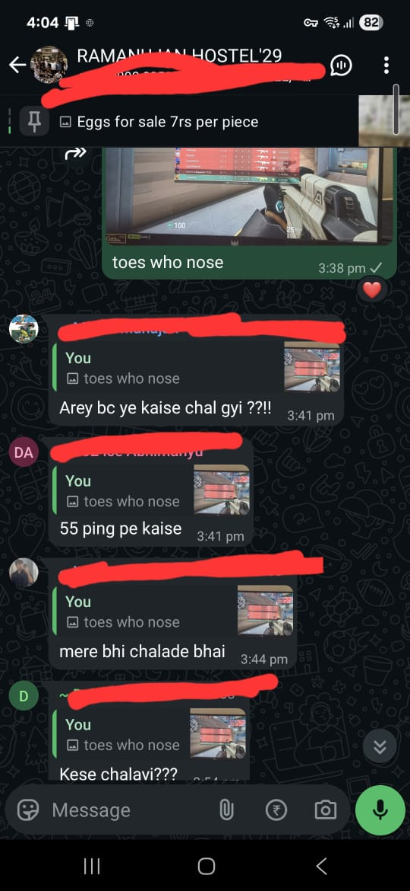
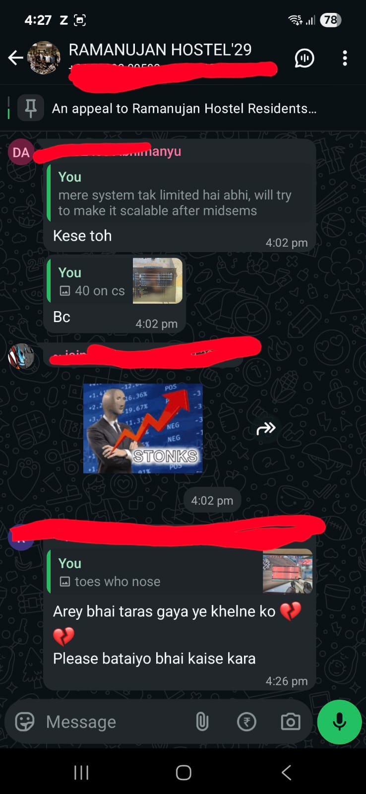

Bypassing NKN DPI for Low-Latency Gaming with VLESS + uTLS + REALITY
full repo + setup.sh + winInstallation + advanced-setup on githubback in the hostel at NSUT the wifi had become a nightmare. the network was locked down so aggressively that basic things stopped working. chess.com would just hang. game servers were unreachable. anything that looked even slightly like a vpn or a game client got throttled or dropped entirely. the official explanation was that it was a security measure, but in practice it made the connection useless for anything beyond loading the simplest pages.
i needed something that actually felt like a local link for fps games. not just something that connected, but something with real low jitter and no added latency. so i started testing everything that claimed it could beat heavy dpi. the question i kept coming back to was: how is nobody else bothered enough by this to figure it out? how are people just okay with chess.com being blocked on a university network?
quic, which runs http/3 over udp, got killed almost immediately. hysteria2 was getting a lot of attention at the time because of its aggressive bandwidth congestion control and udp obfuscation, so i tried that next. it worked for about thirty seconds before the connection quality collapsed. i later found out that hysteria2's udp patterns are relatively easy to classify at volume even when the payload is encrypted. the dpi here wasn't just looking at ports or simple protocol signatures. it was doing something deeper.
ikev2 and the standard vpn protocols were all dead on arrival. any server that showed up in a blocklist was gone. even obscure wireguard setups on non-standard ports got spotted. i read through everything i could find at the time on what specifically nkn-style firewalls inspect, and the answer that kept coming up was the tls fingerprint in the clienthello.
what the dpi is actually inspecting
most advanced campus or nkn-style firewalls sit inline and inspect every new tls connection while the initial handshake is still in plaintext. the very first packet a client sends is the clienthello. inside it is the sni, which tells the network exactly which domain you are trying to reach, plus a detailed fingerprint of the entire tls stack: the order of supported ciphers, the list of extensions, the elliptic curves, grease values, and more.
a real chrome browser on windows produces one very specific fingerprint. most vpn and proxy tools, which are built on go's tls stack by default, produce something completely different. the dpi maintains blocklists for both suspicious sni values and these non-browser fingerprints. udp traffic is especially easy to classify and throttle separately because many "gaming" or "vpn" categories are udp-based. once a flow gets tagged, the latency explodes or the packets simply disappear.
that meant the only traffic with any real chance of getting through cleanly was normal-looking https over tcp 443 to a legitimate domain, carrying a clienthello that was indistinguishable from chrome.
what finally worked, and why
the combination that survived was vless over websockets inside tls, fronted by nginx for a real certificate, with utls on the client configured to impersonate chrome. from the firewall's perspective it looked like a browser talking to a duckdns domain with a proper cert. the fingerprint matched because of utls, and the actual proxy data was hidden inside the websocket frames after the handshake completed.
i later moved the server side to sing-box with reality. in that setup the clienthello carries something like microsoft.com as the sni. the server completes the handshake by talking to the real microsoft endpoint in the background and forwards a legitimate certificate back to the client. the proxy traffic then rides inside that session. the dpi sees what looks like legitimate chrome traffic to microsoft. it is extremely difficult to distinguish without breaking the connection for everyone else.
i rented a cheap nearby vps, stood up duckdns with certbot, nginx as a reverse proxy, and either xray or sing-box. i generated a uuid, chose a secret websocket path, and configured the client fingerprint. on windows i used v2rayn with the settings from the wininstallation notes in the repo: the duckdns address, port 443, ws transport, the secret path, tls, and fingerprint set to chrome.
here is the core of the server configuration that mattered:
# after certbot and xray install
# xray config (simplified)
{
"inbounds": [{
"port": 10001,
"listen": "127.0.0.1",
"protocol": "vless",
"settings": { "clients": [{ "id": "YOUR_UUID" }], "decryption": "none" },
"streamSettings": { "network": "ws", "wsSettings": { "path": "/my-secret-path" } }
}],
"outbounds": [{ "protocol": "freedom" }]
}
# nginx ws location block
location /my-secret-path {
if ($http_upgrade != "websocket") { return 404; }
proxy_pass http://127.0.0.1:10001;
proxy_http_version 1.1;
proxy_set_header Upgrade $http_upgrade;
proxy_set_header Connection "upgrade";
proxy_set_header Host $host;
}
on the client side the single most important setting was telling the tool to use a chrome fingerprint. that was what finally made the dpi stop treating the connection as "some go proxy tool" and let the latency drop to something usable for games.
vless, xray, utls: what these actually do
v2rayN is the popular Windows GUI client for the V2Ray/Xray proxy platform. Xray is the actively maintained core (a fork of the original V2Ray project) that powers a lot of these tools today. The protocol stack we relied on — VLESS over WebSocket inside TLS — is specifically good at looking like ordinary HTTPS web traffic to DPI systems.
The two features that mattered most for bypassing the inspection were:
- uTLS on the client: this library lets the outbound connection spoof the exact TLS ClientHello fingerprint of a real Chrome browser instead of the default Go tls stack that most proxies use by default.
- Reality on the server: instead of presenting your own certificate, the server impersonates a big legitimate site (microsoft.com in the SNI field for example) and forwards a real certificate it fetches from the actual site. The firewall sees "normal browser talking to microsoft". Your proxy data is hidden inside that session.
Here is what the "Add [VLESS] Server" screen in v2rayN looked like with our exact settings (taken from the winInstallation guide in the repo):
Address (Host): your duck dns url goes here
Port: 443
ID (UUID): The YOUR_UUID you generated
Flow: (leave this blank)
Encryption: none
Transport (Network): ws (or websocket)
Path: /my-secret-path (or whatever secret path you chose)
Host: your ducks dns url
Transport Layer (Bottom Section): Select tls
SNI : (This will likely auto-fill when you select tls)
Fingerprint: chrome (for better DPI resistance)
how it played out in practice
for a while this was my daily driver. i had posted on x at the time saying something like "NSIT blocked all vpns on wifi so I built my own. Free bird lives" because people kept asking how i was getting playable ping. the config screenshots from that thread are still the ones linked in the post below.
original post on x
"NSIT blocked all vpns on wifi so I built my own. Free bird lives"
(follow-up: "i need to make a project ig")
the bigger turning point came later when i joined the hostel committee in ramanujan hostel. one of the things i pushed for was a conversation with the warden about how the "security" blocks were way too broad. they were breaking completely normal student activities like chess or low-ping gaming for no good reason. after explaining what was actually happening at the network level, the restrictions got walked back for a lot of the legitimate low-bandwidth use cases. the network became usable again for regular people without everyone having to run custom tunnels just to play a game or use a normal site.
the full setup.sh, the windows installation steps, and the advanced-setup notes from the time i was tuning latency and jitter are all in the repo.
this was never really about beating the system for the sake of it. it was about making the network not suck for the things students actually needed and wanted to do.
reactions from the group when it started working
the real validation came in the hostel group chats once people started using it and the ping dropped enough for actual games.

